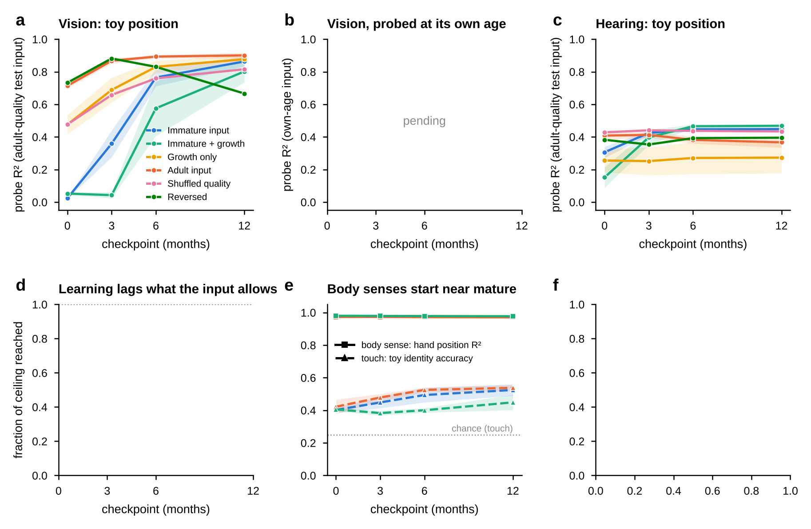
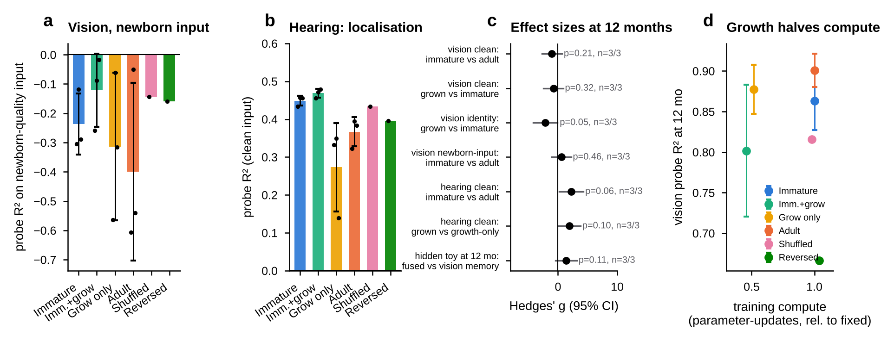
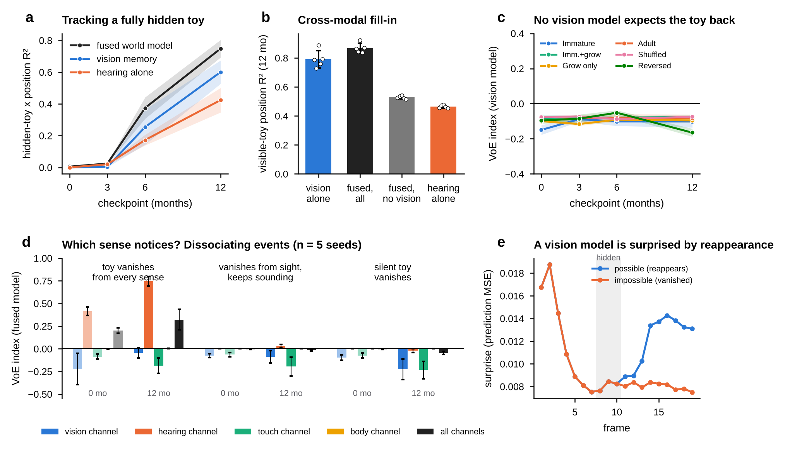
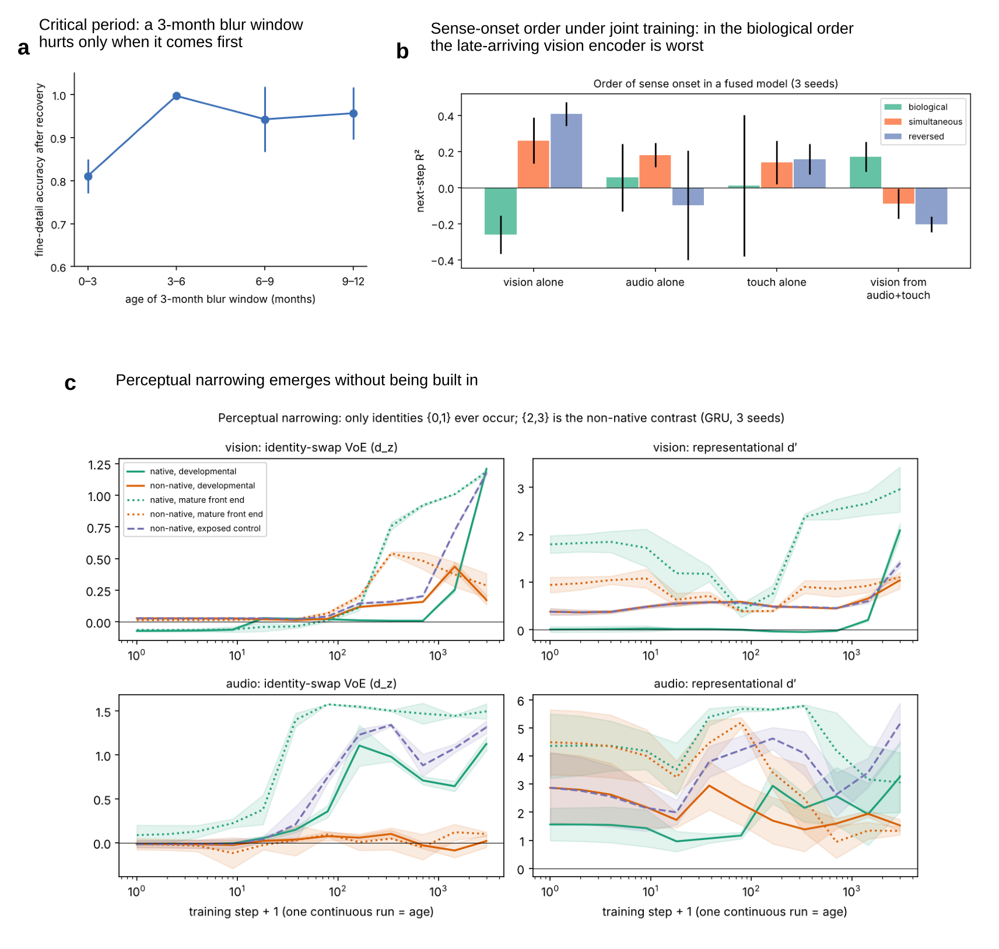
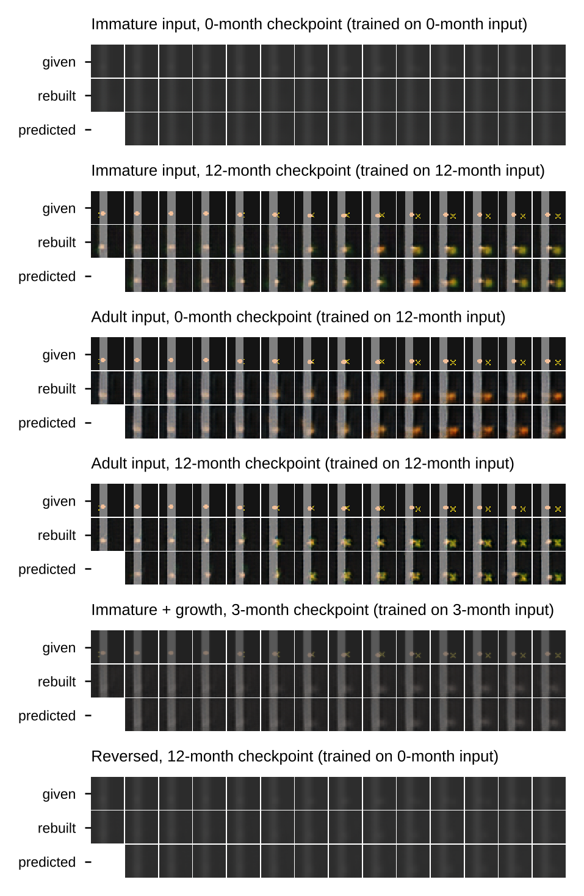
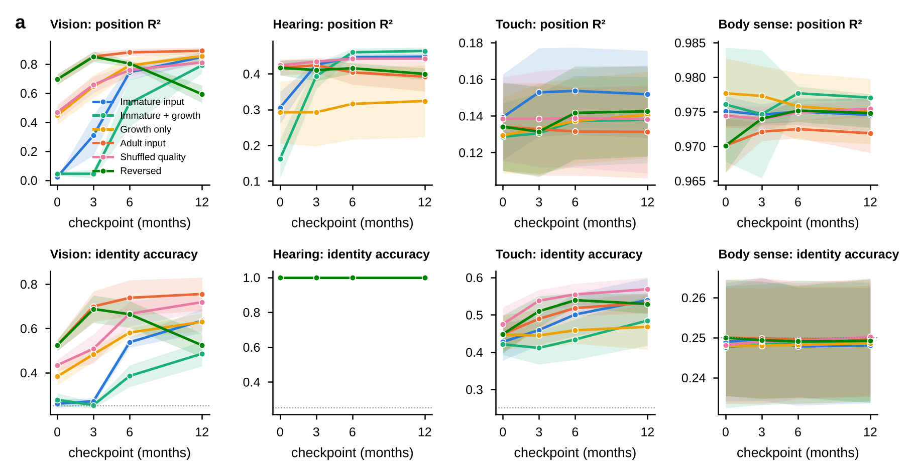
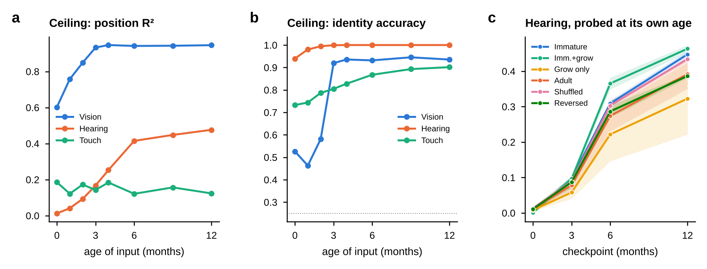

Results
All results of the study, in the order of the four questions on Study design. Figures are the paper's figures; numbers in tables and in marked values are read from data/results.json when the page loads and therefore always match the repository's result files. Interactive versions: development curves, hide-and-seek, fusion.
Summary
- In the learned curves vision develops last, after hearing, touch and body position, as in babies, but only because the input filters are set that way; a ceiling-based measure of the order does not recover the infant order (Kendall τ = 0.00). Learning also lags well behind what the input allows: at the newborn checkpoint the vision model's position read-out is R² = – while a supervised network extracts – from the same input.
- Network growth slows learning (p = 0.005 for object identity) and uses about – of the fixed network's parameter-updates for vision.
- Early immaturity may help hearing on clean input (R² – versus – for adult input; borderline, p = 0.05). Its cost in vision (– versus –) is not significant (p = 0.06).
- Fusing the senses tracks a fully hidden object better than any one sense (R² – versus – for vision memory), in all five seeds.
- No model expects a hidden object to persist: the fused model's apparent surprise disappears when hearing is prevented from giving the event away.
Infant-like inputs are therefore sufficient for infant-like trajectories of what is decodable, but not for infant-like expectations. Values are means over independent training seeds at the 12-month checkpoint unless stated; n = – seeds per regime. Read Scope and limitations before quoting any number.
A testbed of sense-specific developmental world models
The nursery renders one toy of four types, a babbling hand and, in half the scenes, a vertical screen into four streams (Fig. 1; Study design). Each sense is filtered by a fixed front end whose parameters follow the age; for vision we use published infant acuity and contrast sensitivity, for hearing, touch and proprioception coarse placeholder tables that respect the known order of maturation. Each sense is trained in one continuous run of four stages and read out at the end of each stage; we call these checkpoints 0, 3, 6 and 12 months. Six regimes cross the input schedule and network growth, with two order controls. All regimes see the same data for the same number of updates.

The input schedule sets the order; learning lags the input

With immature input, the vision model cannot localise the toy at the first two checkpoints (position R² – and –) and then rises steeply to – (Fig. 2a). The same network trained on adult-quality input localises the toy from the first checkpoint (–) and ends at –. Hearing rises modestly as binaural cues mature, and proprioception and touch are near their final level throughout (Fig. 2c, e). In the learned curves vision is the last sense to develop, passing half its final score only between the 3- and 6-month checkpoints, while hearing, touch and body position are well on their way at 0 months. That late arrival of vision is put there by the front-end tables and is not a finding about learning. A cruder measure, the age at which each sense's information ceiling reaches half its final value, does not recover the infant order at all (Kendall τ = 0.00; Fig. 2f), because the vision ceiling is already high at birth.
Two controls separate learning from input. First, probing on adult-quality input asks a model trained on blurred images to generalise to sharp ones; probing instead on each checkpoint's own input (Fig. 2b) shows the early failure is not a distribution-shift artefact. Second, the newborn input is not empty: a supervised network trained directly on it decodes toy position with R² = –, rising to – at 12 months (Fig. 2a, dashed). The self-supervised vision model reaches only a small fraction of what its input allows at the early checkpoints and closes the gap later (Fig. 2d). The infant-like curve is thus a joint product of what the input contains and how slowly a predictive objective extracts a small object from a blurred, low-contrast scene.
Growth slows learning and reduces compute
Adding growth to immature input does not change the shape of the curve; it delays it (Fig. 2a). The grown vision model is at R² – at the 3-month checkpoint and ends at –, against – for the fixed-size network; identity accuracy is – against – (Hedges' g = –, p = –). Growth without immature input learns quickly and ends near the adult-input model (–). At matched updates, growing networks use – of the fixed network's parameter-updates (Fig. 3d). The delay has a simple cause (Theory): units added with zero outgoing weights receive zero gradient on their incoming weights until the outgoing weights move.
Early immaturity: no clear cost in vision, a borderline benefit in hearing

On clean input the adult-input vision model is best: position R² – against – for immature input (g = –, p = –). Tested on newborn-quality input, every model fails (Fig. 3a); regimes that saw immature input fail less on average (– against –), but the difference is within seed variability (p = –). We do not claim a robustness benefit in vision.
Hearing is different. Models that heard immature sound early localise better on clean input at 12 months (– immature, – immature with growth) than models that only heard adult-quality sound (– adult input, – growth only; Fig. 3b; g = –, p = –). Shuffled input quality (–) is close to the immature schedule, which suggests the benefit comes from having heard degraded input at all, a form of augmentation, more than from its order. Reversing the schedule is the clearest negative control: the vision model that ends on newborn-quality input falls from – to –.
Combined senses keep what each sense loses

During a long occlusion, the hidden toy's horizontal position can be decoded from the vision model's memory (R² – at 12 months), from hearing, which passes through the screen (–), and best from the fused world model (–; Fig. 4a). The advantage appears at 6 months; nothing is decodable at 0 to 3 months, when neither vision nor binaural hearing can localise. For a visible toy, the fused state is better than vision alone (– against –) and, with vision switched off, still recovers position from hearing, touch and the hand (–; Fig. 4b).
Decodable is not expected
No unimodal vision model, in any regime, has a positive VoE index (Fig. 4c): all are more surprised when the toy reappears than when it fails to, like a predictor that copies the last frame (Fig. 4e). This holds although the hidden toy's position is decodable from the same model's memory. Squared-error prediction explains it (Theory): the error-minimising forecast is the conditional mean of the next frame, and when the reappearance time is uncertain that mean is dominated by the screen.
The fused model shows a positive index when the toy vanishes from every sense, but its channels show where the surprise comes from: the model notices that the sound stopped. When the toy vanishes from sight but keeps sounding, or when a silent toy vanishes, no channel reliably signals the violation (table below and Fig. 4d). Without a sound to give the event away, the fused model does not expect the toy back either. A read-out can show that information about a hidden object is present while the model's predictions do not use it; object permanence has to be tested with paradigms, not probes.
Convergent evidence from two companion studies

Two companion studies, run with independent code and stimuli, point the same way (Fig. 5). In networks on a shape-versus-texture task, the acuity schedule alone produced an infant-like curve whatever the capacity strategy, growing networks were slowest, and the same three months of blur caused a lasting deficit only when they came first: a critical period in a plain continuous run with no plasticity schedule. In a two-sense version, the first sense crowded out the later one under joint training, and training each sense separately before fusing gave the best per-sense encoders. In a cross-sense study with violations applied to a latent world, memory was the only architectural requirement shared by all senses, and perceptual narrowing emerged without being built in. These studies use their own code and are not reproduced by the scripts in this repository's dwm/ package.
Which infant signatures appear
| Infant signature | Present in our models? | What produces it |
|---|---|---|
| Body senses first, vision last | Yes, by construction | Front-end tables |
| Slow early vision | Yes, beyond what the input requires | Input plus slow extraction by a predictive objective |
| Early immaturity helps later | Borderline in hearing (clean input, p = 0.05), not in vision | Degraded input as augmentation |
| Critical period for early deprivation | Yes (companion study) | Continuous training; no plasticity schedule needed |
| Perceptual narrowing | Yes in vision, partly in hearing (companion study) | Training statistics |
| Multisensory advantage under occlusion | Yes | Fusion of frozen sense latents |
| Object permanence (surprise at vanishing) | No | Not produced by squared-error prediction |
| Growth as development | No: slower, less compute | Zero-gradient start of new units |
Planned comparisons
The comparisons below were planned in advance and are evaluated at the 12-month checkpoint. Effect sizes are Hedges' g with an approximate 95% interval computed from the group sizes; p values are from Welch's t-test; no correction for multiple comparisons is applied. With few seeds per regime, several large effects are not significant and should be read as estimates (Scope and limitations).
| Loading… |
Result tables
Generated from data/results.json.
Probe results by regime and checkpoint
Fusion at 12 months
| Loading… |
Compute accounting
| Loading… |
Milestones
| Loading… |
Extended data


